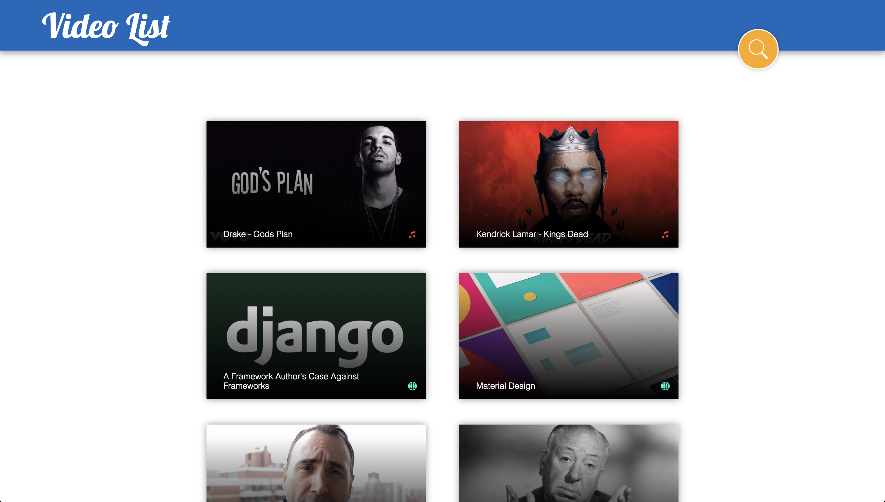
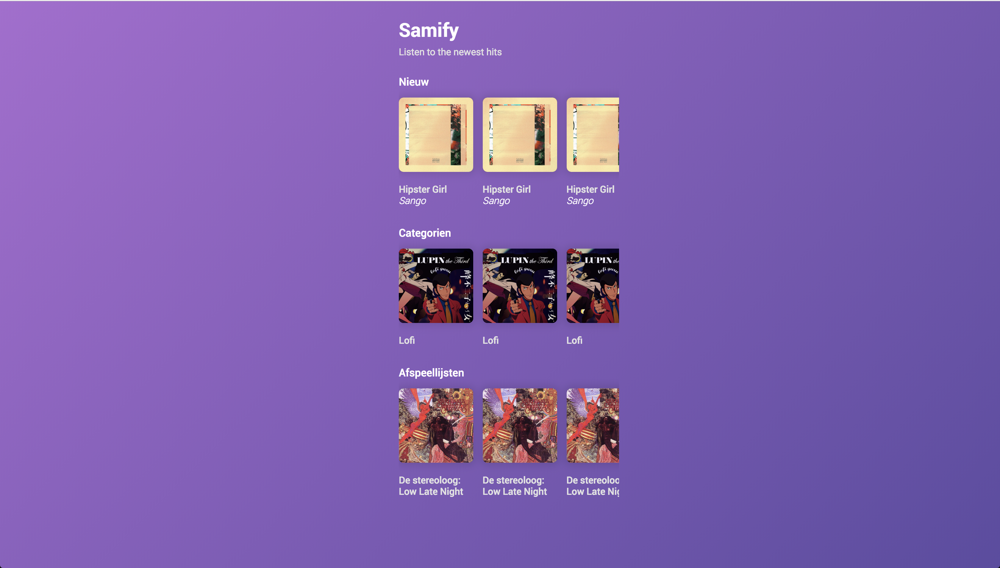
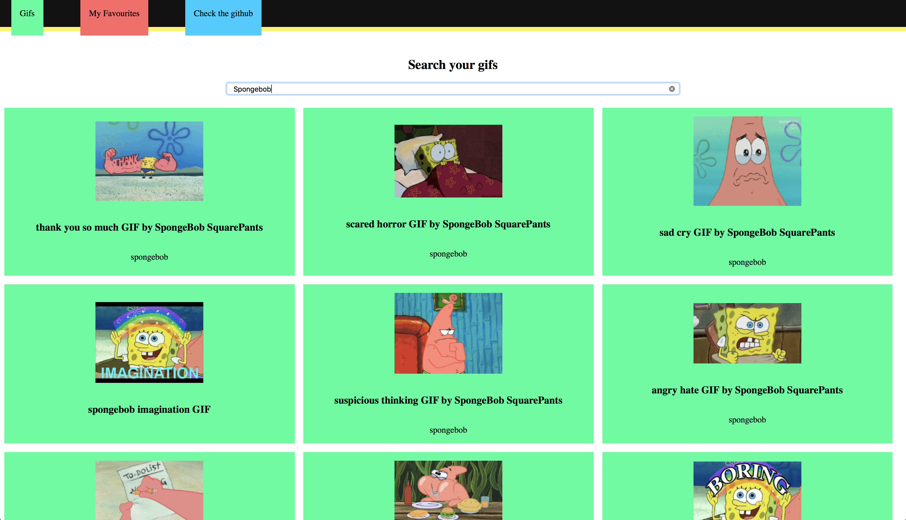
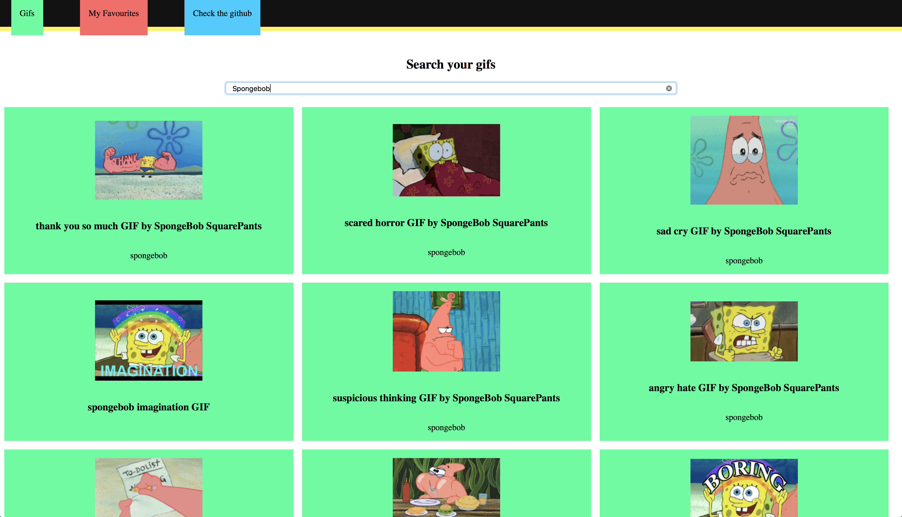

01. Clarity is job #1
Clarity is the first and most important job of any interface. To be effective using an interface you've designed, people must be able to recognize what it is, care about why they would use it, understand what the interface is helping them interact with, predict what will happen when they use it, and then successfully interact with it. While there is room for mystery and delayed gratification in interfaces, there is no room for confusion. Clarity inspires confidence and leads to further use. One hundred clear screens is preferable to a single cluttered one.
Student examples ✍

✔
✔
✔
Wich one would you click on?
02. Interfaces exist to enable interaction
Interfaces exist to enable interaction between humans and our world. They can help clarify, illuminate, enable, show relationships, bring us together, pull us apart, manage our expectations, and give us access to services. The act of designing interfaces is not Art. Interfaces are not monuments unto themselves. Interfaces do a job and their effectiveness can be measured. They are not just utilitarian, however. The best interfaces can inspire, evoke, mystify, and intensify our relationship with the world.
Type something in the field
03. Conserve attention at all costs
We live in a world of interruption. It's hard to read in peace anymore without something trying to distract us and direct our attention elsewhere. Attention is precious. Don't litter the side of your applications with distractible material…remember why the screen exists in the first place. If someone is reading let them finish reading before showing that advertisement (if you must). Honor attention and not only will your readers be happier, your results will be better. When use is the primary goal, attention becomes the prerequisite. Conserve it at all costs.
Read this text in peace
X
03. Conserve attention at all costs
We live in a world of interruption. It's hard to read in peace anymore without something trying to distract us and direct our attention elsewhere. Attention is precious. Don't litter the side of your applications with distractible material…remember why the screen exists in the first place. If someone is reading let them finish reading before showing that advertisement (if you must). Honor attention and not only will your readers be happier, your results will be better. When use is the primary goal, attention becomes the prerequisite. Conserve it at all costs.
04. Keep users in control
Humans are most comfortable when they feel in control of themselves and their environment. Thoughtless software takes away that comfort by forcing people into unplanned interactions, confusing pathways, and surprising outcomes. Keep users in control by regularly surfacing system status, by describing causation (if you do this that will happen) and by giving insight into what to expect at every turn. Don't worry about stating the obvious…the obvious almost never is.
Adjust the font-size
05. Direct manipulation is best
The best interface is none at all, when we are able to directly manipulate the physical objects in our world. Since this is not always possible, and objects are increasingly informational, we create interfaces to help us interact with them. It is easy to add more layers than necessary to an interface, creating overly-wrought buttons, chrome, graphics, options, preferences, windows, attachments, and other cruft so that we end up manipulating UI elements instead of what's important. Instead, strive for that original goal of direct manipulation…design an interface with as little a footprint as possible, recognizing as much as possible natural human gestures. Ideally, the interface is so slight that the user has a feeling of direct manipulation with the object of their focus.
Draw in the box
06. One primary action per screen
Every screen we design should support a single action of real value to the person using it. This makes it easier to learn, easier to use, and easier to add to or build on when necessary. Screens that support two or more primary actions become confusing quickly. Like a written article should have a single, strong thesis, every screen we design should support a single, strong action that is its raison d'etre.
Student examples ✍
 

Fill in your name and password
07. Keep secondary actions secondary
Screens with a single primary action can have multiple secondary actions but they need to be kept secondary! The reason why your article exists isn't so that people can share it on Twitter…it exists for people to read and understand it. Keep secondary actions secondary by making them lighter weight visually or shown after the primary action has been achieved.
Student examples ✍

Share it, if you want
F08. Provide a natural next step
Very few interactions are meant to be the last, so thoughtfully design a next step for each interaction a person has with your interface. Anticipate what the next interaction should be and design to support it. Just as we like in human conversation, provide an opening for further interaction. Don't leave a person hanging because they've done what you want them to do…give them a natural next step that helps them further achieve their goals.
Fill in the details
Fill in your firstname
Fill in your lastname
09. Appearance follows behavior
Humans are most comfortable with things that behave the way we expect. Other people, animals, objects, software. When someone or something behaves consistently with our expectations we feel like we have a good relationship with it. To that end designed elements should look like how they behave. Form follows function. In practice this means that someone should be able to predict how an interface element will behave merely by looking at it. If it looks like a button it should act like a button. Don't get cute with the basics of interaction…keep your creativity for higher order concerns.
Click the link to go to moodle
Moodle10. Consistency matters
Following on the previous principle, screen elements should not appear consistent with each other unless they behave consistently with each other. Elements that behave the same should look the same. But it is just as important for unlike elements to appear unlike (be inconsistent) as it is for like elements to appear consistent. In an effort to be consistent novice designers often obscure important differences by using the same visual treatment (often to re-use code) when different visual treatment is appropriate.
11. Strong visual hierarchies work best
A strong visual hierarchy is achieved when there is a clear viewing order to the visual elements on a screen. That is, when users view the same items in the same order every time. Weak visual hierarchies give little clue about where to rest one's gaze and end up feeling cluttered and confusing. In environments of great change it is hard to maintain a strong visual hierarchy because visual weight is relative: when everything is bold, nothing is bold. Should a single visually heavy element be added to a screen, the designer may need to reset the visual weight of all elements to once again achieve a strong hierarchy. Most people don't notice visual hierarchy but it is one of the easiest ways to strengthen (or weaken) a design.
12. Smart organization reduces cognitive load
As John Maeda says in his book Simplicity, smart organization of screen elements can make the many appear as the few. This helps people understand your interface easier and more quickly, as you've illustrated the inherent relationships of content in your design. Group together like elements, show natural relationships by placement and orientation. By smartly organizing your content you make it less of a cognitive load on the user…who doesn't have to think about how elements are related because you've done it for them. Don't force the user to figure things out…show them by designing those relationships into your screens.
13. Highlight, don't determine, with color
The color of physical things changes as light changes. In the full light of day we see a very different tree than one outlined against a sunset. As in the physical world, where color is a many-shaded thing, color should not determine much in an interface. It can help, be used for highlighting, be used to guide attention, but should not be the only differentiator of things. For long-reading or extended screen hours, use light or muted background colors, saving brighter hues for your accent colors. Of course there is a time for vibrant background colors as well, just be sure that it is appropriate for your audience.
14. Progressive disclosure
Show only what is necessary on each screen. If people are making a choice, show enough information to allow them the choice, then dive into details on a subsequent screen. Avoid the tendency to over-explain or show everything all at once. When possible, defer decisions to subsequent screens by progressively disclosing information as necessary. This will keep your interactions more clear.
15. Help people inline
In ideal interfaces, help is not necessary because the interface is learnable and usable. The step below this, reality, is one in which help is inline and contextual, available only when and where it is needed, hidden from view at all other times. Asking people to go to help and find an answer to their question puts the onus on them to know what they need. Instead build in help where it is needed…just make sure that it is out of the way of people who already know how to use your interface.
16. A crucial moment: the zero state
The first time experience with an interface is crucial, yet often overlooked by designers. In order to best help our users get up to speed with our designs, it is best to design for the zero state, the state in which nothing has yet occurred. This state shouldn't be a blank canvas…it should provide direction and guidance for getting up to speed. Much of the friction of interaction is in that initial context…once people understand the rules they have a much higher likelihood of success.
17. Great design is invisible
A curious property of great design is that it usually goes unnoticed by the people who use it. One reason for this is that if the design is successful the user can focus on their own goals and not the interface…when they complete their goal they are satisfied and do not need to reflect on the situation. As a designer this can be tough…as we receive less adulation when our designs are good. But great designers are content with a well-used design…and know that happy users are often silent.
18. Build on other design disciplines
Visual and graphic design, typography, copywriting, information architecture and visualization…all of these disciplines are part of interface design. They can be touched upon or specialized in. Do not get into turf wars or look down on other disciplines: grab from them the aspects that help you do your work and push on. Pull in insights from seemingly unrelated disciplines as well…what can we learn from publishing, writing code, bookbinding, skateboarding, firefighting, karate?
19. Interfaces exist to be used
As in most design disciplines, interface design is successful when people are using what you've designed. Like a beautiful chair that is uncomfortable to sit in, design has failed when people choose not to use it. Therefore, interface design can be as much about creating an environment for use as it is creating an artifact worth using. It is not enough for an interface to satisfy the ego of its designer: it must be used!